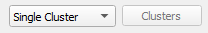
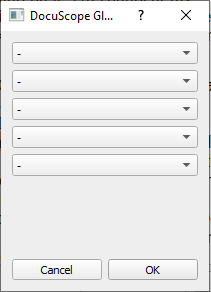
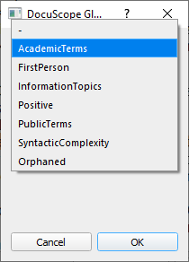

By default, the Temporal View graph displays a cluster along with its
dimensions. Alternatively, enable multiple clusters to graph the occurrence of different
clusters.
Select the Single Cluster drop down menu
Select Multiple Clusters
Click the Clusters button

Select the desired clusters from the Drop Down Menus and
press OK

Note: The drop down menus will display all the clusters shown in the
Category window. If you have an active filter the excluded
clusters will not be visible in this menu.